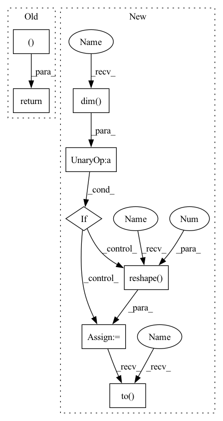

Pattern ID :17060
Before Change
related_preds = self.eval_related_pred(x, edge_index, masks, **kwargs)
return None, masks, related_preds After Change
if not self.explain_graph:
node_idx = kwargs.get("node_idx")
if not node_idx.dim() :
node_idx = node_idx.reshape(-1 )
node_idx.to( self.device)
assert node_idx is not None
_, _, _, self.hard_edge_mask = subgraph(
node_idx, self.__num_hops__, self_loop_edge_index, relabel_nodes=True,
In pattern: SUPERPATTERN
Frequency: 3
Non-data size: 8
Instances Fragment ID: 57193996
Project Name: divelab/dig
Commit Name: 1094bb655b4d8f08e5342ea7f78a1dd25ea6a423
Time: 2021-09-27
Author: 1161283769@qq.com
File Name: dig/xgraph/method/deeplift.py
M Class Name: DeepLIFT
N Class Name: DeepLIFT
M Method Name: forward(3)
N Method Name: forward(3)
M Parent Class: WalkBase
N Parent Class: WalkBase
M File Name: dig/xgraph/method/deeplift.py
N File Name: dig/xgraph/method/deeplift.py
M Start Line: 80
M End Line: 105
N Start Line: 55
N End Line: 108
Before Change
self.__clear_masks__()
return None, edge_masks, related_preds
After Change
// Only operate on a k-hop subgraph around `node_idx`.
// Get subgraph and relabel the node, mapping is the relabeled given node_idx.
if not self.explain_graph:
node_idx = kwargs.get("node_idx")
if not node_idx.dim() :
node_idx = node_idx.reshape(-1 )
node_idx = node_idx.to( self.device)
self.node_idx = node_idx
assert node_idx is not None
_, _, _, self.hard_edge_mask = subgraph(
Fragment ID: 57193997
Project Name: divelab/dig
Commit Name: 1094bb655b4d8f08e5342ea7f78a1dd25ea6a423
Time: 2021-09-27
Author: 1161283769@qq.com
File Name: dig/xgraph/method/gnnexplainer.py
M Class Name: GNNExplainer
N Class Name: GNNExplainer
M Method Name: forward(4)
N Method Name: forward(4)
M Parent Class: ExplainerBase
N Parent Class: ExplainerBase
M File Name: dig/xgraph/method/gnnexplainer.py
N File Name: dig/xgraph/method/gnnexplainer.py
M Start Line: 137
M End Line: 155
N Start Line: 125
N End Line: 159
Before Change
return None, masks, related_preds
class GraphLayerGradCam(ca.LayerGradCam):
After Change
self_loop_edge_index, _ = add_self_loops(edge_index, num_nodes=self.num_nodes)
if not self.explain_graph:
node_idx = kwargs.get("node_idx")
if not node_idx.dim() :
node_idx = node_idx.reshape(-1 )
node_idx = node_idx.to( self.device)
assert node_idx is not None
_, _, _, self.hard_edge_mask = subgraph(
node_idx, self.__num_hops__, self_loop_edge_index, relabel_nodes=True,
num_nodes=None, flow=self.__flow__()) Fragment ID: 57193998
Project Name: divelab/dig
Commit Name: 1094bb655b4d8f08e5342ea7f78a1dd25ea6a423
Time: 2021-09-27
Author: 1161283769@qq.com
File Name: dig/xgraph/method/gradcam.py
M Class Name: GradCAM
N Class Name: GradCAM
M Method Name: forward(3)
N Method Name: forward(3)
M Parent Class: WalkBase
N Parent Class: WalkBase
M File Name: dig/xgraph/method/gradcam.py
N File Name: dig/xgraph/method/gradcam.py
M Start Line: 94
M End Line: 118
N Start Line: 80
N End Line: 125